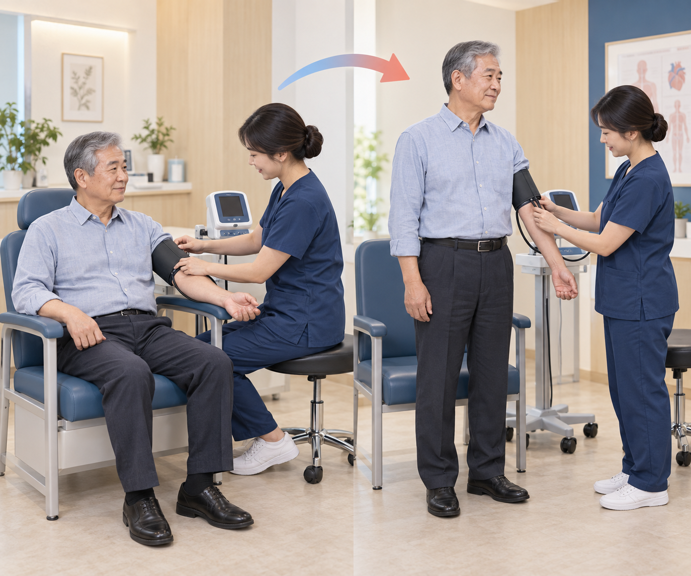
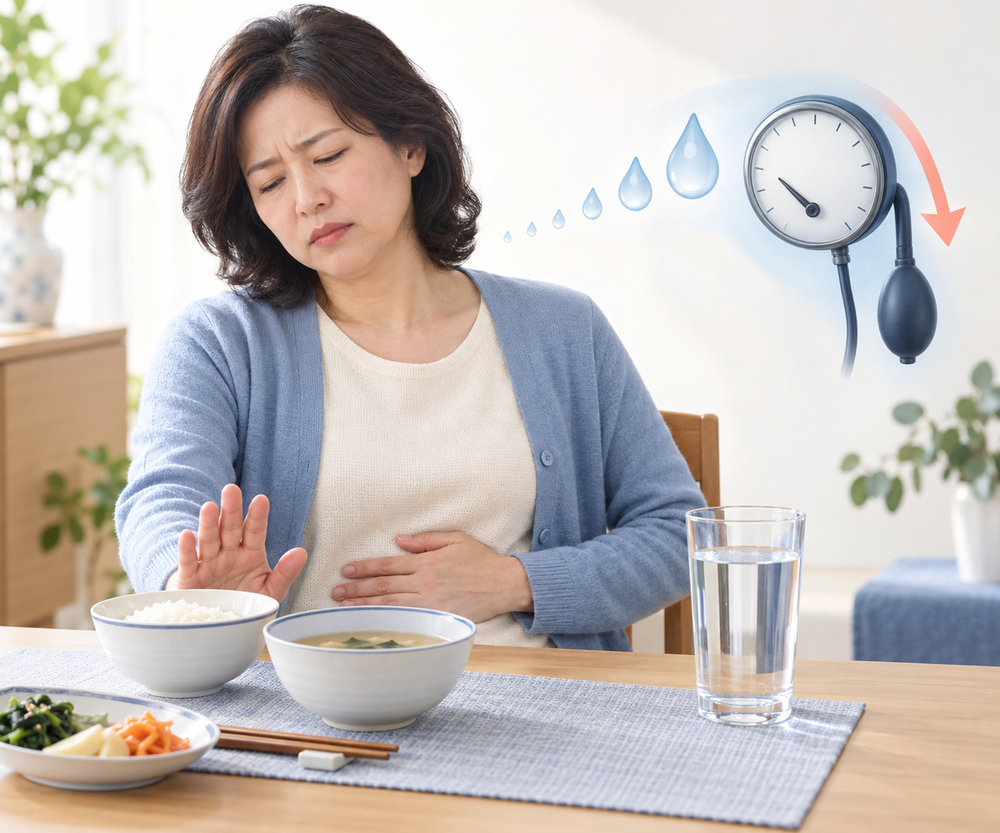

두 약의 부작용 보고를 비교한 연구이며, 혈압약을 대신한다는 뜻은 아닙니다.
32개 시험, 47,332명. RR은 비교군을 1로 볼 때의 부작용 보고 비율입니다.
| 연구에서 비교한 증상 | 비교군을 1로 볼 때 | 환자가 기억할 뜻 |
|---|---|---|
| 티르제파타이드 · 높은 혈압 관련 보고 | 0.40배 (95% 범위 0.26–0.60) | 비교군보다 적게 보고됐습니다. |
| 티르제파타이드 · 낮은 혈압 관련 보고 | 2.45배 (95% 범위 1.35–4.45) | 비교군보다 많이 보고됐습니다. |
| 티르제파타이드 · 고용량 사용군의 낮은 혈압 | 2.58배 (95% 범위 1.38–4.81) | 고용량군에서도 많았지만 용량을 올릴수록 늘어난다고 단정할 수는 없습니다. |
| 세마글루타이드 · 높은 혈압 관련 보고 | 0.81배 (95% 범위 0.57–1.15) | 비교군과 뚜렷한 차이가 확인되지 않았습니다. |
| 세마글루타이드 · 낮은 혈압 관련 보고 | 1.39배 (95% 범위 0.81–2.36) | 비교군과 뚜렷한 차이가 확인되지 않았습니다. |
부작용 보고 비율은 실제 혈압이 몇만큼 떨어졌는지를 뜻하지 않습니다.
이 연구에서 보고하지 않은 결과를 효과 없음으로 해석할 수 없습니다.
| 연구에서 본 약과 결과 | 근거의 확실성 | 비교군을 1로 볼 때 | 이렇게 읽으세요 |
|---|---|---|---|
| 세마글루타이드 · 사망·심장혈관 문제·부작용 | 판단 불가 | 결과가 보고되지 않음 | 효과가 없다는 뜻은 아닙니다. |
| 티르제파타이드 · 사망·심장혈관 문제·부작용 | 판단 불가 | 결과가 보고되지 않음 | 효과가 없다는 뜻은 아닙니다. |
| 비교 약 오를리스타트 · 심한 부작용 | 보통 | 1.45배 (1.10–1.91) | 비교군보다 많이 보고됐습니다. |
| 비교 약 오를리스타트 · 전체 부작용 | 매우 낮음 | 1.13배 (0.84–1.54) | 차이를 단정하기 어렵습니다. |
| 비교 약 펜터민·토피라메이트 · 전체 부작용 | 보통 | 1.13배 (1.08–1.20) | 비교군보다 많이 보고됐습니다. |
| 비교 약 날트렉손·부프로피온 · 전체 부작용 | 보통 | 1.69배 (1.58–1.80) | 비교군보다 많이 보고됐습니다. |
| 비교 약 날트렉손·부프로피온 · 전체 사망 | 매우 낮음 | 0.99배 (0.70–1.40) | 차이를 단정하기 어렵습니다. |
특히 티르제파타이드 주사량을 늘린 뒤 어지럼을 확인합니다.

앉았다 일어설 때 어지러운지, 먹고 마시는 양이 줄었는지 살핍니다.
어떤 약을 쓸지는 체중·혈당·몸 상태를 함께 보고 정합니다.
메스꺼움으로 식사·수분이 줄면 어지럼이 심해질 수 있습니다.

설명용 가상 사례입니다. 약 조정은 본인 진료에서 결정합니다.
아직 따로 측정되지 않은 사람과 결과가 있습니다.
| 이 자료로 답하기 어려운 질문 | 진료실에서는 이렇게 확인합니다 |
|---|---|
| 혈압이 몇 mmHg 내려가나요? | 여기 제시한 연구는 부작용 보고를 비교했습니다. 실제 혈압 변화는 다른 연구와 본인의 측정 기록으로 확인해야 합니다. |
| 오래 쓰면 심장에 어떤가요? | 이 자료에 제시한 연구만으로 장기 심장혈관 결과를 판단할 수 없습니다. 담당 의사에게 본인의 위험을 물어보세요. |
| 국내 권고에는 맞나요? | 이 자료만으로 국내 최신 권고를 확인할 수 없습니다. 처방 전에 담당 의사가 확인합니다. |
| 용량을 어떻게 바꾸나요? | 여기에 용량이나 다른 약과의 조합표는 없습니다. 처방전대로 쓰고 스스로 바꾸지 마세요. |
| 한국인에게도 같은가요? | 인용 연구에 참여한 분들의 인종·체형 분포를 이 자료에서는 검증하지 않았습니다. |
자세한 출처는 이 장에서 확인할 수 있습니다.
QR로 같은 자료를 다시 열 수 있습니다.